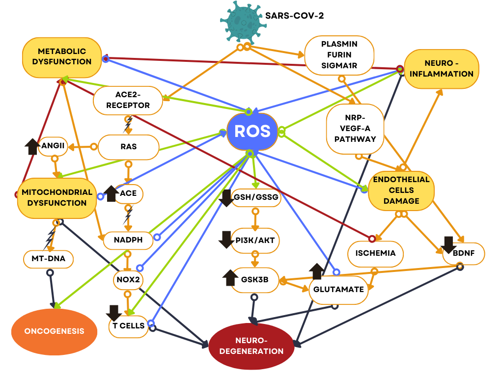

Oxidative Stress
and the Post-COVID Brain
Could a simple blood test flag who is at risk of cognitive decline after COVID-19? A research proposal and an integrated model of how the virus sets off oxidative stress.
What this work asks
Some people develop lasting neurological symptoms after COVID-19, including problems with memory, attention and thinking. This proposal asks whether blood markers of oxidative stress track cognitive decline in these patients, and whether they could one day serve as an early warning sign of neurodegeneration.
The question has a historical echo. In the years around the 1918 influenza pandemic, an epidemic of encephalitis lethargica affected an estimated million people with severe neurological illness, and many survivors developed parkinsonism later in life. Whether influenza was involved is still debated, but it raises an obvious question: could a modern pandemic leave similar long-term effects on the brain?
There is a second clue. Oxidative stress rises as the brain ages, and COVID-19 appears to speed up that process. This may help explain why so many people report memory loss, “brain fog” and other neurological and psychiatric symptoms after the infection.
The proposal covers two things: a model that connects the biology, and a study designed to test it.
One loop, many routes
The literature describes the mechanisms one by one. This model connects them. SARS-CoV-2 sets off oxidative stress (ROS) through several routes at once: mitochondrial dysfunction, a metabolic shift, damage to the lining of blood vessels and the blood–brain barrier, neuroinflammation and reduced BDNF. Oxidative stress then feeds back into each of them. The result is a self-reinforcing loop that can continue after the virus has cleared and that converges on neurodegeneration. The model draws on studies from many different research areas, and many of them arrive at the same central role for oxidative stress.
- Nearly 100 sources
- 5 mechanistic pathways
- 1 integrated model

In plain language
1. Energy failure
The virus disrupts a hormone-signaling pathway (RAS). The cell’s power stations, the mitochondria, then make less energy and leak more reactive molecules (ROS).
2. Blood vessels and the barrier
Damage to the lining of blood vessels weakens the blood–brain barrier. Immune cells enter the brain and add to neuroinflammation.
3. Neuroinflammation and lost protection
Neuroinflammation and a drop in the growth factor BDNF each push oxidative stress higher, which feeds back into the first two.
Designed to test it
Design
A five-year longitudinal study with annual assessments. Three groups of 150 people: neurological long COVID, COVID-19 without long COVID, and people never infected.
Measures
Blood markers of oxidative stress (the glutathione ratio GSH/GSSG, cysteine and homocysteine) alongside yearly cognitive testing with the MoCA.
Inclusive by design
People over 65, people with other health conditions and people with a higher BMI are included, and vaccination status is accounted for. The proposal identifies these as gaps in earlier cross-sectional studies.
Analysis
Repeated-measures ANOVA and mixed-effects regression, with planned handling of missing data and sensitivity analyses. Sample size was calculated for high statistical power.
What it expects to find
- People with neurological long COVID will have higher levels of oxidative stress markers.
- They will show worse cognitive function, and more decline over time, than both comparison groups.
- Across all groups, higher oxidative stress will go together with lower cognitive function.
What the proposal states about itself
The proposal sets out its own limitations. Glutathione is hard to measure in plasma, and blood levels may not fully reflect levels in the brain. The MoCA may miss very mild decline. Participants who deteriorate may drop out, which makes missing data a real risk.
Status: this is a research proposal. No data were collected and no results are reported.
Connecting complex systems into one picture
The same approach shapes BioBrain’s AI work: take a complex system, ground it in evidence, and turn it into something that works for people.